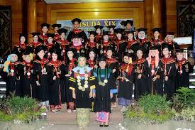
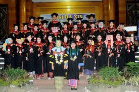

TUJUAN
1. Menghasilkan lulusan yang memiliki kompetensi dalam berkomunikasi menggunakan Bahasa Inggris sesuai kaidah-kaidah Bahasa Inggris.
2. Menghasilkan lulusan yang mampu menganalisis dan menjabarkan karya Sastra Inggris
beragam genre dengan menggunakan beberapa metode pendekatan kajian karya sastra dan mengaitkannya dengan isu sosiokultural global.
3. Terselenggaranya penelitian yang mendukung materi proses belajar mengajar Sastra Inggris, penerjemahan dan pengajaran Bahasa Inggris.
4. Menghasilkan lulusan yang dibutuhkan dunia kerja baik tingkat lokal maupun global yang terkait dengan penggunaan keterampilan pengajaran Bahasa Inggris,
kesusastraan dan penerjemahan di berbagai jenis pekerjaan yang sesuai.
5. Menghasilkan program kegiatan pengabdian yang bermanfaat bagi masyarakat umum yang sesuai dengan bidang yang dikembangkan.
 

|